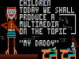
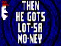
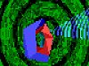
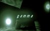
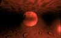
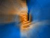

PC 64k
| 1 (409 pts) Drain Vista |
|
||||||||||||
| [HORNET ARCHIVE] drain.zip (61 ko) |
 |
2 (266 pts) ISI Pwp |
 |
 |
|
C'est du mode texte, il faut taper "ISI E" pour l'avoir en anglais. Pas top. | |||||||||||
| [HORNET ARCHIVE] pwp-isi.zip (33 ko) |
 |
3 (253 pts) Gamma MFX |
 |
|
Cette intro se targue d'un pied de nez a "Ah!", la demo que Pulse a presentee a la Mekka'97. Elle est en effet basee sur un moteur raytracing tres puissant et le rendu est tres beau. Question musique, c'est assez oriente techno. | |||||||||||
| [HORNET ARCHIVE] mfx_gma.zip (61 ko) |
| 4 (231 pts) Mustan kissan pksut pikselit Fit |
||||
|
||||||||||||
| [HORNET ARCHIVE] kisu.zip (62 ko) |
| 5 (153 pts) Sup3r K3wl Moottori |
 |
|
Un peu trop de texte, en plus ce n'est que du finlandais... | |||||||||
| [HORNET ARCHIVE] supak3wl.zip (60 ko) |